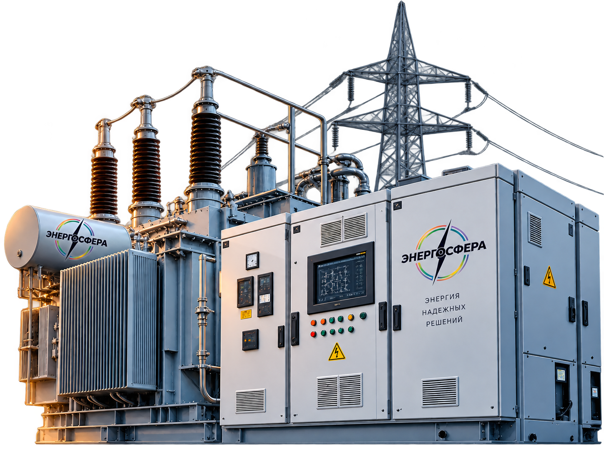

ЭЛЕКТРОЛАБОРАТОРИЯ · УФА
Услуги
и испытания.
Полный перечень работ по электроустановкам, оборудованию, РЗА, кабельным линиям и средствам защиты.

электрооборудования
01 / ПЕРЕЧЕНЬ РАБОТ
Все направления
в одной структуре.
Раскройте направление, чтобы увидеть
состав выполняемых испытаний и измерений.
Электроустановки
до 1000 В
Испытания и измерения электроустановок и оборудования напряжением до 1000 В.
- Проверка соответствия смонтированной электроустановки требованиям нормативной и проектной документации — визуальный осмотр.
- Измерение сопротивления изоляции проводов, кабелей и электрооборудования.
- Проверка заземляющего устройства.
- Проверка наличия цепи и качества контактных соединений зануляющих, заземляющих и защитных проводников.
- Проверка цепи «фаза-нуль» в электроустановках до 1 кВ с глухозаземлённой нейтралью.
- Проверка работоспособности устройства защитного отключения (УЗО).
- Проверка работоспособности автоматических выключателей.
- Проверка схемы автоматического включения резерва (АВР), включая функционирование полностью собранных схем.
- Измерение сопротивления изоляции пола и стен изолирующих помещений, зон и площадок.
Релейная защита
и автоматика
Электрооборудование и электроустановки 0,4–220 кВ.
Проверка устройств РЗА +
Проверяем сопротивление изоляции узлов и устройств, электрические характеристики элементов и взаимодействие частей системы. Выполняем комплексную проверку при номинальном напряжении оперативного тока, проверку взаимодействия с действующими устройствами защиты, автоматики, управления и сигнализации, действия на коммутационную аппаратуру, работы под рабочим током и напряжением. Готовим устройства к включению.
Электрооборудование
выше 1000 В
Разрешённые виды испытаний и измерений до 220 кВ включительно.
01. Синхронные генераторы и компенсаторы выше 1 кВ +
Определение возможности включения без сушки, измерение сопротивления изоляции и сопротивления постоянному току, испытание изоляции повышенным напряжением, снятие характеристик короткого замыкания и холостого хода, проверка междувитковой изоляции, вибрации и газоохладителей.
02. Машины постоянного тока до и выше 1 кВ +
Определение возможности включения без сушки, испытания изоляции, измерения обмоток, бандажей, реостатов и резисторов, снятие характеристик, проверка витковой изоляции, воздушных зазоров и работы под нагрузкой.
03. Электродвигатели переменного тока до и выше 1 кВ +
Измерение сопротивления изоляции и сопротивления постоянному току, испытания повышенным напряжением, измерение зазоров, вибрации и разбега ротора, проверка работы на холостом ходу и под нагрузкой.
04. Силовые трансформаторы, автотрансформаторы и реакторы до 220 кВ +
Определение условий включения, испытания изоляции, измерения обмоток, коэффициента трансформации, группы соединения, тока и потерь холостого хода. Проверяем переключающие устройства, бак, охлаждение, защиту масла, фазировку, вводы и встроенные трансформаторы тока.
05. Измерительные трансформаторы тока до 220 кВ +
Измерение сопротивления изоляции, испытание повышенным напряжением, измерение тангенса угла диэлектрических потерь, снятие характеристик намагничивания, проверка коэффициента трансформации и обмоток.
06. Измерительные трансформаторы напряжения до 220 кВ +
Измерение сопротивления изоляции и сопротивления обмоток постоянному току, испытание повышенным напряжением промышленной частоты и трансформаторного масла.
07. Масляные выключатели до 220 кВ +
Испытания изоляции, вводов, внутрибаковой изоляции и дугогасительных устройств; измерение сопротивления, временных характеристик, хода и контактов; проверка механизмов, напряжения срабатывания, масла и встроенных трансформаторов тока.
08. Воздушные выключатели до 220 кВ +
Измерение сопротивления изоляции и сопротивления постоянному току, испытания повышенным напряжением, проверка характеристик и минимального напряжения срабатывания, многократное включение и отключение.
09. Элегазовые выключатели до 220 кВ +
Испытания изоляции вторичных цепей и электромагнитов управления, проверка характеристик, герметичности, содержания влаги в элегазе и встроенных трансформаторов тока.
10. Вакуумные выключатели до 220 кВ +
Измерение сопротивления изоляции и сопротивления постоянному току, испытания повышенным напряжением, измерение скоростных и временных характеристик, хода подвижных частей и напряжения срабатывания.
11. Выключатели нагрузки до 220 кВ +
Испытания изоляции и предохранителей, измерение сопротивления, проверка механизма свободного расцепления и привода, определение износа дугогасительных вкладышей и обгорания контактов.
12. Разъединители, отделители и короткозамыкатели до 220 кВ +
Измерение сопротивления изоляции и сопротивления постоянному току, испытания повышенным напряжением, проверка усилий контактов, работы аппаратов, временных характеристик и механических блокировок.
13. КРУ и КРУН до 220 кВ +
Измерение сопротивления изоляции и сопротивления постоянному току, испытания повышенным напряжением промышленной частоты и механические испытания.
14. Экранированные токопроводы и шинопроводы до 220 кВ +
Измерение сопротивления изоляции, испытания повышенным напряжением, проверка болтовых и сварных соединений, изоляционных прокладок и устройств искусственного охлаждения.
15. Сборные и соединительные шины до 220 кВ +
Испытания изоляторов, проверка болтовых, опрессованных и сварных контактных соединений, испытания вводов и проходных изоляторов.
16. Сухие токоограничивающие реакторы до 220 кВ +
Измерение сопротивления изоляции обмоток относительно болтов крепления и испытания повышенным напряжением промышленной частоты.
17. Конденсаторы до 1 кВ и выше +
Измерение сопротивления изоляции, ёмкости и тангенса угла диэлектрических потерь, испытание повышенным напряжением и трёхкратным включением батареи конденсаторов.
18. Вентильные разрядники и ограничители перенапряжения до 220 кВ +
Измерение сопротивления и пробивных напряжений, проверка элементов, изолирующих оснований и регистраторов срабатывания, контроль герметичности.
19. Трубчатые разрядники до 220 кВ +
Проверка поверхности, внутреннего диаметра и искровых промежутков, а также расположения зоны выхлопа разрядника.
20. Предохранители и предохранители-разъединители выше 1 кВ +
Испытание опорной изоляции, проверка плавких вставок и резисторов, измерение сопротивления токоведущей части и контактного нажатия, проверка дугогасительной части и работы аппарата.
21. Вводы и проходные изоляторы до 220 кВ +
Измерение сопротивления изоляции, тангенса угла диэлектрических потерь и ёмкости, испытания повышенным напряжением, проверка уплотнений и масла маслонаполненных вводов.
22. Подвесные и опорные изоляторы до 220 кВ +
Измерение сопротивления изоляции и испытание повышенным напряжением промышленной частоты.
23. Трансформаторное масло +
Визуальный контроль и испытание диэлектрической прочности.
24. Аккумуляторные батареи +
Измерение сопротивления изоляции, проверка ёмкости, напряжения при толчковых токах, плотности и химического состава электролита, напряжения на элементах и высоты осадка.
25. Силовые кабельные линии до 220 кВ +
Проверка целостности и фазировки жил, измерение сопротивления изоляции, испытания постоянным и переменным напряжением, определение сопротивления и ёмкости жил, проверка заземления, защит и антикоррозийных мер.
26. Кабельные линии с изоляцией из СПЭ, ЭПР и ПВХ +
Испытание силовых кабельных линий напряжением до и выше 1 кВ с изоляцией из сшитого полиэтилена, высокомодульной этиленпропиленовой резины и ПВХ.
27. Электрические испытания средств защиты +
Диэлектрические перчатки, боты и галоши; изолирующие штанги и клещи; указатели напряжения до и выше 1 кВ; изолированный инструмент до 1 кВ.
28. Заземляющие устройства до 220 кВ +
Проверка элементов и цепи заземляющего устройства, измерение сопротивления заземления и напряжения прикосновения.
НУЖНА КОНСУЛЬТАЦИЯ?